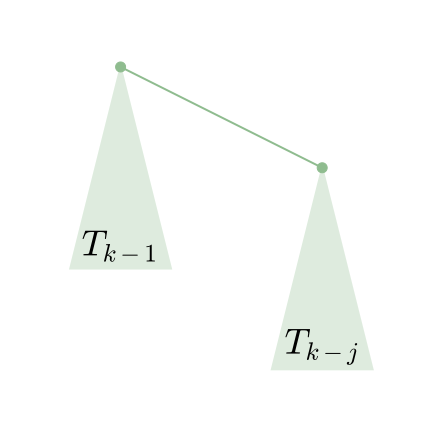

Dsu complexity
本部分内容转载并修改自 时间复杂度 - 势能分析浅谈，已取得原作者授权同意．
定义
阿克曼函数
这里，先给出 $\alpha(n)$ 的定义．为了给出这个定义，先给出 $A_k(j)$ 的定义．
定义 $A_k(j)$ 为：
$$ A_k(j)=\left{ \begin{aligned} &j+1& &k=0&\ &A_{k-1}^{(j+1)}(j)& &k\geq1& \end{aligned} \right. $$
即阿克曼函数．
这里，$f^i(x)$ 表示将 $f$ 连续应用在 $x$ 上 $i$ 次，即 $f^0(x)=x$，$f^i(x)=f(f^{i-1}(x))$．
再定义 $\alpha(n)$ 为使得 $A_{\alpha(n)}(1)\geq n$ 的最小整数值．注意，我们之前将它描述为 $A_{\alpha(n)}(\alpha(n))\geq n$，反正他们的增长速度都很慢，值都不超过 4．
基础定义
每个节点都有一个 rank．这里的 rank 不是节点个数，而是深度．节点的初始 rank 为 0，在合并的时候，如果两个节点的 rank 不同，则将 rank 小的节点合并到 rank 大的节点上，并且不更新大节点的 rank 值．否则，随机将某个节点合并到另外一个节点上，将根节点的 rank 值 +1．这里根节点的 rank 给出了该树的高度．记 x 的 rank 为 $rnk(x)$，类似的，记 x 的父节点为 $fa(x)$．我们总有 $rnk(x)+1\leq rnk(fa(x))$．
为了定义势函数，需要预先定义一个辅助函数 $level(x)$．其中，$level(x)=\max(k:rnk(fa(x))\geq A_k(rnk(x)))$．当 $rnk(x)\geq1$ 的时候，再定义一个辅助函数 $iter(x)=\max(i:rnk(fa(x))\geq A_{level(x)}^i(rnk(x))$．这些函数定义的 $x$ 都满足 $rnk(x)>0$ 且 $x$ 不是某个树的根．
上面那些定义可能让你有点头晕．再理一下，对于一个 $x$ 和 $fa(x)$，如果 $rnk(x)>0$，总是可以找到一对 $i,k$ 令 $rnk(fa(x))\geq A_k^i(rnk(x))$，而 $level(x)=\max(k)$，在这个前提下，$iter(x)=\max(i)$．$level$ 描述了 $A$ 的最大迭代级数，而 $iter$ 描述了在最大迭代级数时的最大迭代次数．
对于这两个函数，$level(x)$ 总是随着操作的进行而增加或不变，如果 $level(x)$ 不增加，$iter(x)$ 也只会增加或不变．并且，它们总是满足以下两个不等式：
$$ 0\leq level(x)<\alpha(n) $$
$$ 1\leq iter(x)\leq rnk(x) $$
考虑 $level(x)$、$iter(x)$ 和 $A_k^j$ 的定义，这些很容易被证明出来，就留给读者用于熟悉定义了．
定义势能函数 $\Phi(S)=\sum\limits_{x\in S}\Phi(x)$，其中 $S$ 表示一整个并查集，而 $x$ 为并查集中的一个节点．定义 $\Phi(x)$ 为：
$$ \Phi(x)= \begin{cases} \alpha(n)\times \mathit{rnk}(x)& \mathit{rnk}(x)=0\ \text{或}\ x\ \text{为某棵树的根节点}\ (\alpha(n)-\mathit{level}(x))\times \mathit{rnk}(x)-iter(x)& \text{otherwise} \end{cases} $$
然后就是通过操作引起的势能变化来证明摊还时间复杂度为 $\Theta(\alpha(n))$ 啦．注意，这里我们讨论的 $union(x,y)$ 操作保证了 $x$ 和 $y$ 都是某个树的根，因此不需要额外执行 $find(x)$ 和 $find(y)$．
可以发现，势能总是个非负数．另，在开始的时候，并查集的势能为 $0$．
证明
union(x,y) 操作
其花费的时间为 $\Theta(1)$，因此我们考虑其引起的势能的变化．
这里，我们假设 $rnk(x)\leq rnk(y)$，即 $x$ 被接到 $y$ 上．这样，势能增加的节点仅有 $x$（从树根变成非树根），$y$（秩可能增加）和操作前 $y$ 的子节点（父节点的秩可能增加）．我们先证明操作前 $y$ 的子节点 $c$ 的势能不可能增加，并且如果减少了，至少减少 $1$．
设操作前 $c$ 的势能为 $\Phi(c)$，操作后为 $\Phi(c')$，这里 $c$ 可以是任意一个 $rnk(c)>0$ 的非根节点，操作可以是任意操作，包括下面的 find 操作．我们分三种情况讨论．
- $iter(c)$ 和 $level(c)$ 并未增加．显然有 $\Phi(c)=\Phi(c')$．
- $iter(c)$ 增加了，$level(c)$ 并未增加．这里 $iter(c)$ 至少增加一，即 $\Phi(c')\leq \Phi(c)-1$，势能函数减少了，并且至少减少 1．
- $level(c)$ 增加了，$iter(c)$ 可能减少．但是由于 $0<iter(c)\leq rnk(c)$，$iter(c)$ 最多减少 $rnk(c)-1$，而 $level(c)$ 至少增加 $1$．由定义 $\Phi(c)=(\alpha(n)-level(c))\times rnk(c)-iter(c)$，可得 $\Phi(c')\leq\Phi(c)-1$．
- 其他情况．由于 $rnk(c)$ 不变，$rnk(fa(c))$ 不减，所以不存在．
所以，势能增加的节点仅可能是 $x$ 或 $y$．而 $x$ 从树根变成了非树根，如果 $rnk(x)=0$，则一直有 $\Phi(x)=\Phi(x')=0$．否则，一定有 $\alpha(x)\times rnk(x)\geq(\alpha(n)-level(x))\times rnk(x)-iter(x)$．即，$\Phi(x')\leq \Phi(x)$．
因此，唯一势能可能增加的点就是 $y$．而 $y$ 的势能最多增加 $\alpha(n)$．因此，可得 $union$ 操作均摊后的时间复杂度为 $\Theta(\alpha(n))$．
find(a) 操作
如果查找路径包含 $\Theta(s)$ 个节点，显然其查找的时间复杂度是 $\Theta(s)$．如果由于查找操作，没有节点的势能增加，且至少有 $s-\alpha(n)$ 个节点的势能至少减少 $1$，就可以证明 $find(a)$ 操作的时间复杂度为 $\Theta(\alpha(n))$．为了避免混淆，这里用 $a$ 作为参数，而出现的 $x$ 都是泛指某一个并查集内的结点．
首先证明没有节点的势能增加．很显然，我们在上面证明过所有非根节点的势能不增，而根节点的 $rnk$ 没有改变，所以没有节点的势能增加．
接下来证明至少有 $s-\alpha(n)$ 个节点的势能至少减少 $1$．我们上面证明过了，如果 $level(x)$ 或者 $iter(x)$ 有改变的话，它们的势能至少减少 $1$．所以，只需要证明至少有 $s-\alpha(n)$ 个节点的 $level(x)$ 或者 $iter(x)$ 有改变即可．
回忆一下非根节点势能的定义，$\Phi(x)=(\alpha(n)-level(x))\times rnk(x)-iter(x)$，而 $level(x)$ 和 $iter(x)$ 是使 $rnk(fa(x))\geq A_{level(x)}^{iter(x)}(rnk(x))$ 的最大数．
所以，如果 $root_x$ 代表 $x$ 所处的树的根节点，只需要证明 $rnk(root_x)\geq A_{level(x)}^{iter(x)+1}(rnk(x))$ 就好了．根据 $A_k^i$ 的定义，$A_{level(x)}^{iter(x)+1}(rnk(x))=A_{level(x)}(A_{level(x)}^{iter(x)}(rnk(x)))$．
注意，我们可能会用 $k(x)$ 代表 $level(x)$，$i(x)$ 代表 $iter(x)$ 以避免式子过于冗长．这里，就是 $rnk(root_x)\geq A_{k(x)}(A_{k(x)}^{i(x)}(x))$．
当你看到这的时候，可能会有一种「这啥玩意」的感觉．这意味着你可能需要多看几遍，或者跳过一些内容以后再看．
这里，我们需要一个外接的 $A_{k(x)}$，意味着我们可能需要再找一个点 $y$．令 $y$ 是搜索路径上在 $x$ 之后的满足 $k(y)=k(x)$ 的点，这里「搜索路径之后」相当于「是 $x$ 的祖先」．显然，不是每一个 $x$ 都有这样一个 $y$．很容易证明，没有这样的 $y$ 的 $x$ 不超过 $\alpha(n)+2$ 个．因为只有每个 $k$ 的最后一个 $x$ 和 $a$ 以及 $root_a$ 没有这样的 $y$．
我们再强调一遍 $fa(x)$ 指的是路径压缩 之前 $x$ 的父节点，路径压缩 之后 $x$ 的父节点一律用 $root_x$ 表示．对于每个存在 $y$ 的 $x$，总是有 $rnk(y)\geq rnk(fa(x))$．同时，我们有 $rnk(fa(x))\geq A_{k(x)}^{i(x)}(rnk(x))$．由于 $k(x)=k(y)$，我们用 $k$ 来统称，即，$rnk(fa(x))\geq A_k^{i(x)}(rnk(x))$．我们需要造一个 $A_k$ 出来，所以我们可以不关注 $iter(y)$ 的值，直接使用弱化版的 $rnk(fa(y))\geq A_k(rnk(y))$．
如果我们将不等式组合起来，神奇的事情就发生了．我们发现，$rnk(fa(y))\geq A_k^{i(x)+1}(rnk(x))$．也就是说，为了从 $rnk(x)$ 迭代到 $rnk(fa(y))$，至少可以迭代 $A_k$ 不少于 $i(x)+1$ 次而不超过 $rnk(fa(y))$．
显然，有 $rnk(root_y)\geq rnk(fa(y))$，且 $rnk(x)$ 在路径压缩时不变．因此，我们可以得到 $rnk(root_x)\geq A_k^{i(x)+1}(rnk(x))$，也就是说 $iter(x)$ 的值至少增加 1，如果 $rnk(x)$ 没有增加，一定是 $level(x)$ 增加了．
所以，$\Phi(x)$ 至少减少了 1．由于这样的 $x$ 节点至少有 $s-\alpha(n)-2$ 个，所以最后 $\Phi(S)$ 至少减少了 $s-\alpha(n)-2$，均摊后的时间复杂度即为 $\Theta(\alpha(n)+2)=\Theta(\alpha(n))$．
为何并查集会被卡
这个问题也就是问，如果我们不按秩合并，会有哪些性质被破坏，导致并查集的时间复杂度不能保证为 $\Theta(m\alpha(n))$．
如果我们在合并的时候，$rnk$ 较大的合并到了 $rnk$ 较小的节点上面，我们就将那个 $rnk$ 较小的节点的 $rnk$ 值设为另一个节点的 $rnk$ 值加一．这样，我们就能保证 $rnk(fa(x))\geq rnk(x)+1$，从而不会出现类似于满地 compile error 一样的性质不符合．
显然，如果这样子的话，我们破坏的就是 $union(x,y)$ 函数「y 的势能最多增加 $\alpha(n)$」这一句．
存在一个能使路径压缩并查集时间复杂度降至 $\Omega(m\log_{1+\frac{m}{n}}n)$ 的结构，定义如下：
二项树（实际上和一般的二项树不太一样），其中 j 是常数，$T_k$ 为一个 $T_{k-1}$ 加上一个 $T_{k-j}$ 作为根节点的儿子．

边界条件，$T_1$ 到 $T_j$ 都是一个单独的点．
令 $rnk(T_k)=r_k$，这里我们有 $r_k=(k-1)/j$（证明略）．每轮操作，我们将它接到一个单节点上，然后查询底部的 $j$ 个节点．也就是说，我们接到单节点上的时候，单节点的势能提高了 $(k-1)/j+1$．在 $j=\lfloor\frac{m}{n}\rfloor$，$i=\lfloor\log_{j+1}\frac{n}{2}\rfloor$，$k=ij$ 的时候，势能增加量为：
$$ \alpha(n)\times((ij-1)/j+1)=\alpha(n)\times((\lfloor\log_{\lfloor\frac{m}{n}\rfloor+1}\frac{n}{2}\rfloor\times \lfloor\frac{m}{n}\rfloor-1)/\lfloor\frac{m}{n}\rfloor+1) $$
变换一下，去掉所有的取整符号，就可以得出，势能增加量 $\geq \alpha(n)\times(\log_{1+\frac{m}{n}}n-\frac{n}{m})$，m 次操作就是 $\Omega(m\log_{1+\frac{m}{n}}n-n)=\Omega(m\log_{1+\frac{m}{n}}n)$．
关于启发式合并
由于按秩合并比启发式合并难写，所以很多 dalao 会选择使用启发式合并来写并查集．具体来说，则是对每个根都维护一个 $size(x)$，每次将 $size$ 小的合并到大的上面．
所以，启发式合并会不会被卡？
首先，可以从秩参与证明的性质来说明．如果 $size$ 可以代替 $rnk$ 的地位，则可以使用启发式合并．快速总结一下，秩参与证明的性质有以下三条：
- 每次合并，最多有一个节点的秩上升，而且最多上升 1．
- 总有 $rnk(fa(x))\geq rnk(x)+1$．
- 节点的秩不减．
关于第二条和第三条，$siz$ 显然满足，然而第一条不满足，如果将 $x$ 合并到 $y$ 上面，则 $siz(y)$ 会增大 $siz(x)$ 那么多．
所以，可以考虑使用 $\log_2 siz(x)$ 代替 $rnk(x)$．
关于第一条性质，由于节点的 $siz$ 最多翻倍，所以 $\log_2 siz(x)$ 最多上升 1．关于第二三条性质，结论较为显然，这里略去证明．
所以说，如果不想写按秩合并，就写启发式合并好了，时间复杂度仍旧是 $\Theta(m\alpha(n))$．